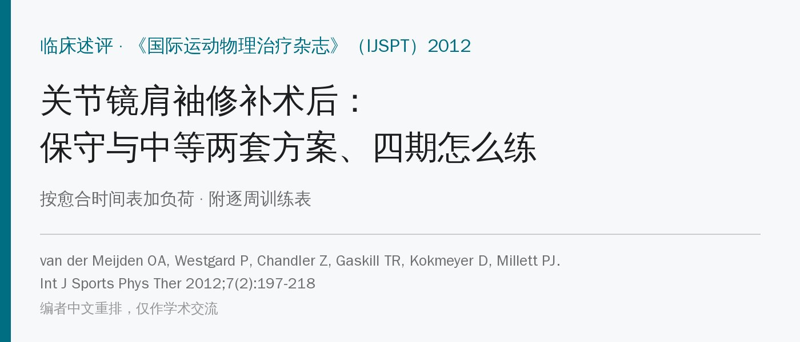
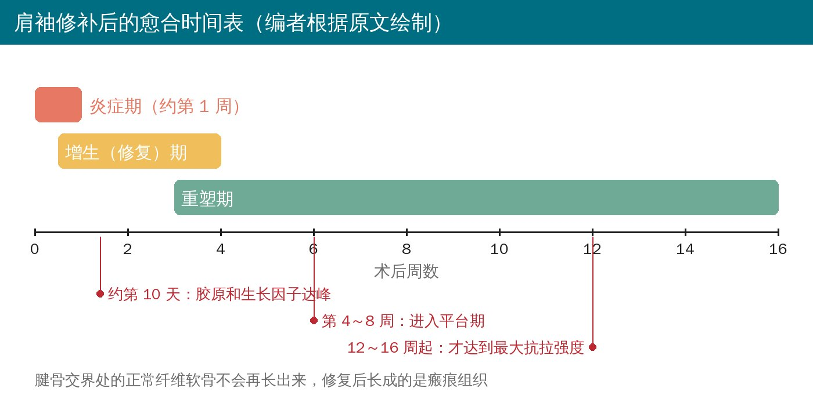
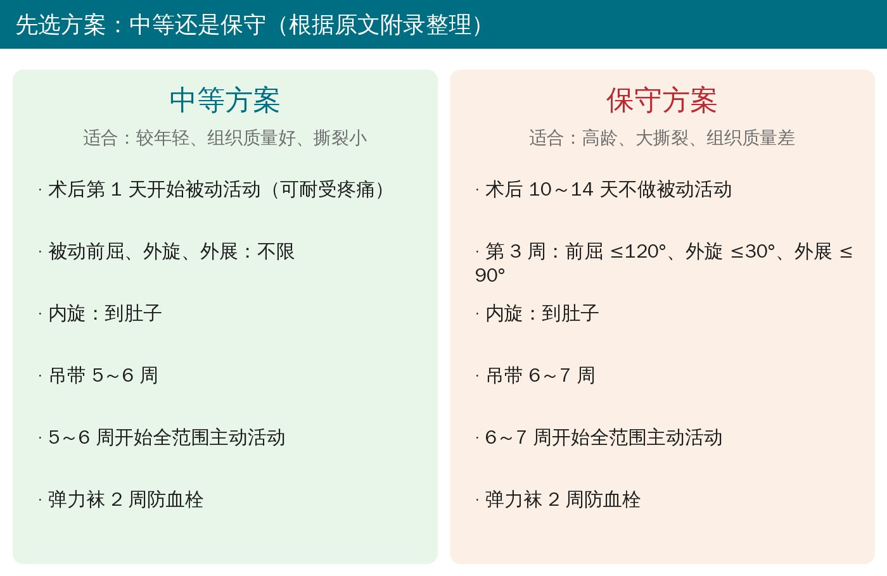
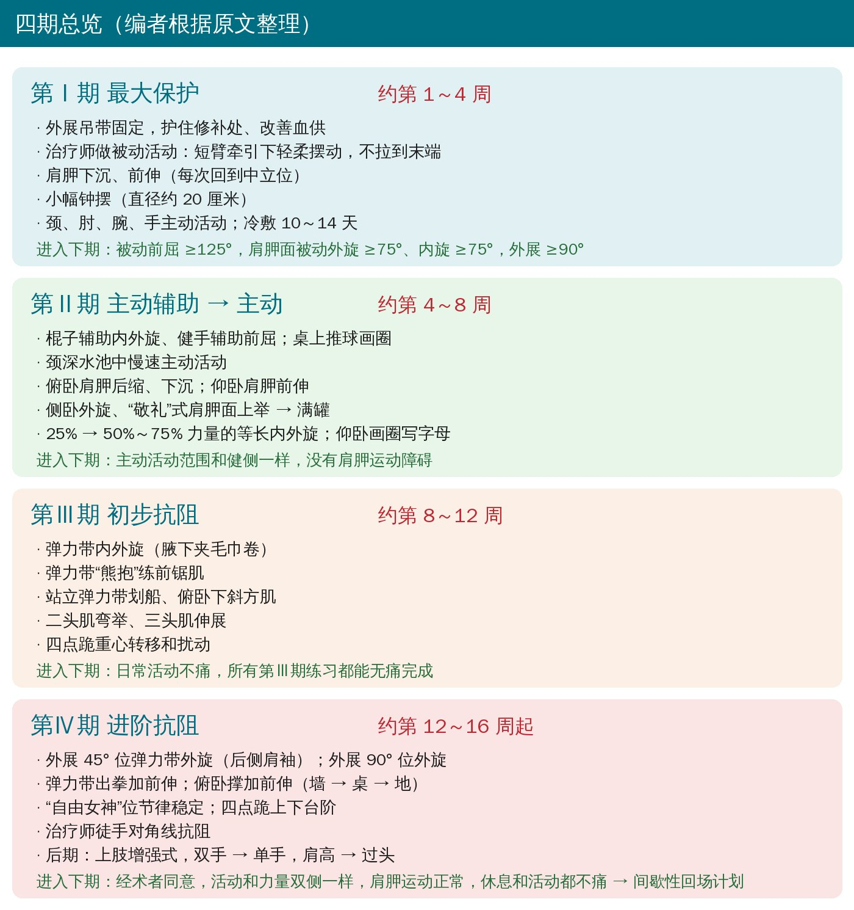
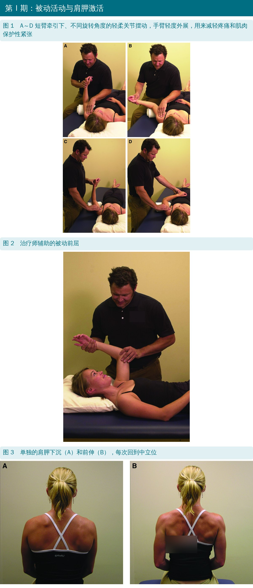
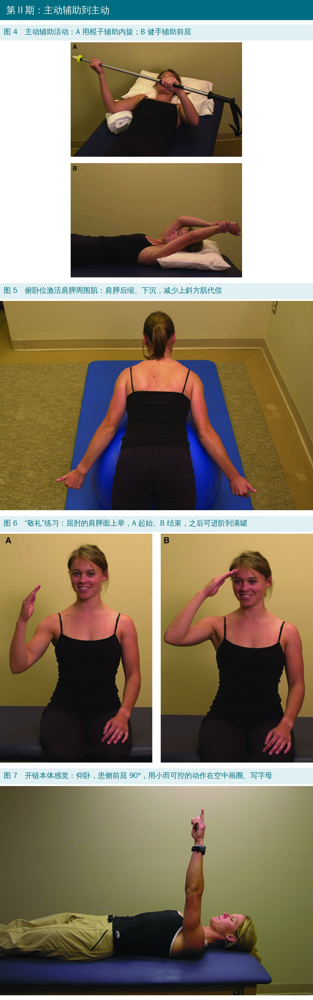
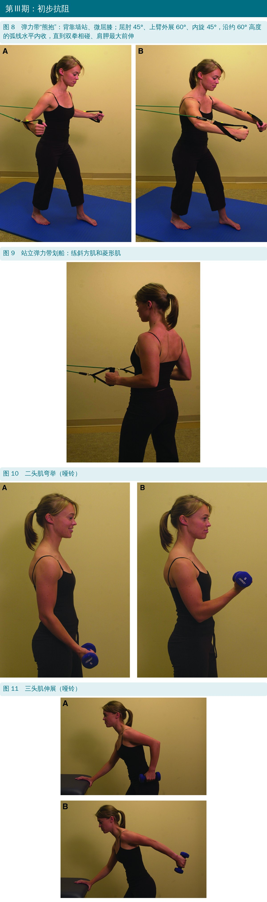
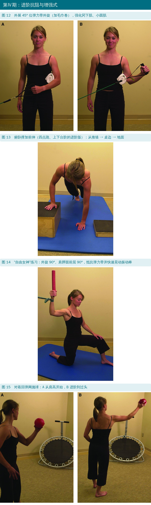

🔖原文信息（编者中文重排）
📚 文献信息
▪ van der Meijden OA, Westgard P, Chandler Z, Gaskill TR, Kokmeyer D, Millett PJ. Rehabilitation after arthroscopic rotator cuff repair: current concepts review and evidence-based guidelines. Int J Sports Phys Ther. 2012;7(2):197-218.
▪ 作者来自美国 Steadman Philippon 研究所、Howard Head 运动医学中心（韦尔、丹佛）
▪ 临床述评 + 作者所在中心使用的两套逐周方案
肩袖撕裂保守治疗无效后常要手术修补。手术做得好只是一半，康复同样关键——但各家方案差别很大，多半靠经验而不是证据。这篇的思路是：按肌腱愈合的时间表，把肩袖肌的负荷从“几乎不用力”一步步加到“全力”。

🔖愈合时间表
• 修补后的强度最初几乎全靠缝线；炎症细胞、血小板、成纤维细胞第 1 周进来，接下来 2～3 周大量增殖，先长的是较弱的Ⅲ型胶原
• 约 3～4 周进入重塑期，Ⅲ型胶原慢慢换成Ⅰ型
• 至少 12～16 周才达到最大抗拉强度；腱骨交界处的正常纤维软骨不会再长出来
• 所以早期要“护”：既要让肌腱长牢，又要防止关节粘连僵硬
| 手段 | 原文要点 | 作者建议 |
|---|---|---|
| 固定 | 术后僵硬是最常见并发症；但动物研究显示至少固定 2 周僵硬更少，固定也减小修补处张力；外展位可改善血供 | 外展吊带固定 4～6 周，期间出来做有人指导的被动活动 |
| 持续被动活动机 | 多项对照试验与不用者结局无差别；患者自己辅助的活动肌电反而更高 | 不常规使用，可在关节松解后用来保持活动度 |
| 冷疗 | 随机对照试验：术后 24 小时疼痛和止痛药更少，10 天时康复耐受更好；配合加压可能更好 | 家用冷疗装置用 10～14 天 |
| 关节松动 | 休息位（肩胛面外展 30°）做牵引、前后滑动，不增加冈上肌修补处应力；后向滑动能明显增加外旋 | 早期低等级减痛；4～6 周后在最大外展外旋位用高等级 |
| 按肌电排序加负荷 | 早期只做肩袖肌电很低的动作，后期才做高肌电的力量练习 | 每期达到疼痛、活动度、力量目标才进入下一期 |
关于早动还是晚动：系统综述发现固定的人僵硬更多，但作者认为僵硬是“并发症”、再撕裂是“失败”，所以仍主张先固定一段时间，有僵硬高风险的人再调整：撕裂小、工伤赔偿、年龄 < 50 岁、钙化性肌腱炎、粘连性关节囊炎、同时做了盂唇修补。
术者和治疗师先沟通手术情况：撕裂大小、累及哪几根肌腱、组织质量、修补方式、有没有合并手术，再选方案、做个体化调整。

🔖两套方案
• 中等方案：术后第 1 天就开始被动活动（以可耐受的疼痛为限）
• 保守方案：推迟或限制被动活动，通常 2～4 周；原文附录写的是 术后 10～14 天不做被动活动，第 3 周起前屈 ≤120°、外旋 ≤30°、外展 ≤90°
• 各阶段都配家庭练习，一开始就做颈、肘、腕、手的主动活动

🔖四期总览
• 被动活动尽早开始；短臂牵引下的轻柔摆动可以减轻疼痛和肌肉保护性紧张
• 治疗师辅助的被动活动比滑轮等方式更安全——后者肩袖肌会不自觉地用力
• 不拉到末端：作者用伴侣辅助的摆动式被动活动，避免牵拉修补处、加重炎症
• 休息时用中立旋转位吊带；做颈、肘、腕、手主动活动和姿势宣教
• 肩胛：单独的肩胛下沉和前伸（每次回到中立位）后侧肩袖肌电很低，可以做；肩胛钟和肩胛后缩要慎用，冈上肌肌电会升到不安全的水平
• 钟摆：只画直径约 20 厘米的小圈，冈上肌、冈下肌活动 < 15% 最大自主收缩
进入第Ⅱ期：被动前屈 ≥125°，肩胛面被动外旋 ≥75°、内旋 ≥75°，肩胛面外展 ≥90°。

🔖原文图 1～3
• 开始前要有足够的被动活动、上举时没有耸肩代偿、被动活动痛很少；年龄大、合并症多、修补大或质量差的会推迟
• 主动辅助：仰卧棍子辅助内外旋、健手辅助前屈；或站着把手和前臂放在桌上的瑞士球上画圈
• 水中：颈深水里慢速主动活动；水中以每秒 30° 做肩胛面上举，肩袖肌电比陆上辅助练习还低
• 肩胛：俯卧肩胛后缩、下沉，压住常常过度用力的上斜方肌；前锯肌从仰卧前屈 90° 位前伸开始，进阶到 120°；无负重卧推系列：仰卧 → 半躺 → 坐直
• 肩袖：侧卧外旋（冈下肌、小圆肌）；“敬礼”——屈肘的肩胛面上举，开始募集冈上肌，再进阶到满罐
• 等长内外旋：屈肘 90°、腋下夹毛巾卷，健手给阻力，从最大力量的 25%逐步加到 50%～75%，不引起疼痛
• 开链本体感觉：仰卧，患侧前屈 90°，在空中小幅度画圈、写字母
进入第Ⅲ期：主动活动范围和健侧一样，没有肩胛运动障碍。

🔖原文图 4～7
• 弹力带内外旋：手臂低于肩高，腋下夹毛巾卷减少代偿
• “熊抱”：背靠墙站、微屈膝、双脚与肩同宽；屈肘 45°、上臂外展 60°、内旋 45°；沿约 60° 高度的弧线水平内收，直到双拳相碰、肩胛最大前伸，再慢慢回
• 站立弹力带划船练斜方肌、菱形肌；俯卧下斜方肌（类似俯卧满罐，下斜方肌肌电最高）
• 二头肌弯举、三头肌伸展（哑铃或弹力管）
• 四点跪节律稳定：重心转移加扰动，用关节压缩力提高肌肉激活
进入第Ⅳ期：日常活动不痛，所有第Ⅲ期练习都能无痛完成。

🔖原文图 8～11
• 要求：多个角度的主动活动都没有肩胛运动障碍，第Ⅲ期练习无痛、无代偿
• 后侧肩袖：站立、外展 45° 位弹力带外旋；外展 90° 位外旋
• 前锯肌：弹力带出拳加前伸（站立背对固定点，手在胸前约肩宽，向前推到前屈约 120° 再前伸肩胛）；俯卧撑加前伸：推墙 → 桌边 → 地面
• 节律稳定：“自由女神”位（外旋 90°、肩胛面前屈 90°）抵抗弹力带，同时快速晃动振动棒，治疗师绕着病人改变拉力方向；四点跪上下不同高度、角度的台阶
• 治疗师徒手对角线抗阻
• 上肢增强式（本期末，先和骨科团队确认）：先双手再单手，对墙、回弹网或同伴抛逐渐加重的药球，从肩高进阶到过头

🔖原文图 12～15
• 条件：术者同意，活动度和力量两侧对称，肩胛运动正常，休息和活动都不痛
• 专项训练在充分休息、热身 5～10 分钟后做；每周 3 次、中间至少隔 1 天；上一级无痛才进下一级；其余日子做心肺、柔韧、肩胛、肩袖、下肢和核心的维持训练
• 高尔夫：推杆、切球 → 短、中、长铁杆和木杆；能无痛打完相当于 9 洞的杆数后上场打 9 洞，连续 3 次 9 洞无痛再打 18 洞
• 网球：有限次数的正反手底线球 → 过头发球 → 约 4 周后回到比赛
• 附录还写明回健身房的限制：不做颈后高位下拉，不做宽握卧推
• 作者自己也说证据很少：方案主要是临床经验，结合了有限的文献（多为肌电和动物研究）
• 方案来自一家大型运动医学中心，没有用结局数据验证过
• 利益关系：通讯作者是某关节镜器械公司的顾问、持有某冷疗设备公司股票，第一作者的访问学者职位由该器械公司资助——而文中推荐家用冷疗装置
• 这是 2012 年的文章，之后关于早期活动与再撕裂的随机对照试验更多，应用时要结合新证据
原文里对不上的地方：
• 保守方案的日常活动和回场反而比中等方案更早：过头活动保守方案第 8 周、中等方案第 13 周；提 >5 磅保守第 9 周、中等第 13 周；游泳保守第 21 周、中等第 25 周
• 正文说第Ⅲ期一般 8～12 周、第Ⅳ期 12～16 周，但中等方案表格第Ⅳ期练习从第 10 周就开始
• “熊抱”在正文属于第Ⅲ期，表格里却放在第Ⅳ期；图 8 图注又叫它“熊抱测试”
• 正文提醒“肩胛后缩要慎用”，两套表格却从第 1 周就安排“肩胛后缩—下沉”
• 正文说外展 90° 位外旋“最能激活冈上肌”，和通常的肌电结论（主要练冈下肌）不一致
• 第Ⅰ期被动外旋、内旋都要求 ≥75°，而保守方案第 3 周外旋限制在 30°，第Ⅱ期又要求 4～8 周开始——标准和时间表衔接不上
• 中等方案限制写“内旋到肚子”，表格却从第 1 周就做“内旋到腰带线”
• 先问术者：撕裂多大、几根肌腱、组织好不好、修补多牢，再决定用中等还是保守方案
• 早期被动活动由治疗师做、不拉到末端；钟摆只画小圈；肩胛下沉、前伸可以早做
• 进第Ⅱ期看数：被动前屈 ≥125°、外旋内旋 ≥75°、外展 ≥90°
• 主动阶段先压住上斜方肌，再练前锯肌、下斜方肌和肩袖；等长从 25% 力量开始
• 抗阻一般在 8～12 周后；最大强度要 12～16 周以后，增强式练习先和骨科确认
• 回场前：术者同意、两侧对称、肩胛正常、不痛；健身房避免颈后下拉和宽握卧推
表中周数为原文表格标注的练习周（原表列为第 1～10、13、17、21、25 周）；“须征得医生同意”表示原表写明需经医生确认。
原文附录 A、B 中等方案与保守方案逐周安排
| 项目 | 中等方案 | 保守方案 |
|---|---|---|
| 第Ⅰ期 · 基础 | ||
| 肩胛后缩—下沉 | 第 1～6 周 | 第 1～6 周 |
| 颈椎活动度练习 | 第 1～6 周 | 第 1～6 周 |
| 肘、手、腕活动度 | 第 1～6 周 | 第 1～6 周 |
| 钟摆 | 第 2～6 周 | 第 3～6 周 |
| 水中轻柔主动辅助活动 | 第 3～6 周 | 第 5～6 周 |
| 踝泵（防深静脉血栓） | 第 1～4 周 | 第 1～6 周 |
| 被动活动 | ||
| 外旋 | 第 1～9 周 | 第 5～9 周 |
| 前屈和肩胛面上举 | 第 1～9 周 | 第 5～9 周 |
| 外展 | 第 1～9 周 | 第 5～9 周 |
| 内旋到腰带线 | 第 1～9 周 | 第 3～9 周 |
| 内旋（轻柔） | 第 4～9 周 | 第 6～9 周 |
| 主动辅助活动 | ||
| 内旋和外旋 | 第 5～6 周 | 第 6～7 周 |
| 前屈和肩胛面上举 | 第 5～6 周 | 第 6～7 周 |
| 轻等长收缩 | ||
| 内旋/外旋 | 第 7～8 周 | 第 7～8 周 |
| 二头肌/三头肌 | 第 4～8 周 | 第 7～8 周 |
| 主动活动 | ||
| 侧卧外旋 | 第 5～8 周 | 第 6～17 周 |
| 前屈和肩胛面上举（躺椅进阶） | 第 5～8 周 | 第 6～13 周 |
| 前屈和肩胛面上举 | — | — |
| “敬礼”（躺椅进阶） | 第 6～8 周 | 第 6～17 周 |
| 俯卧水平外展加外旋 | 第 6～8 周 | 第 8～17 周 |
| 俯卧下斜方肌（到 60°） | 第 6～8 周 | 第 8～17 周 |
| 俯卧后伸加外旋 | 第 6～8 周 | 第 6～17 周 |
| 开链本体感觉 | 第 6～8 周 | 第 6～17 周 |
| 低负荷长时间牵伸 | ||
| 门框牵伸系列 | 第 7～9 周 | 第 8 周起 |
| 毛巾内旋牵伸 | 第 7～9 周 | 第 9 周起 |
| 交叉臂牵伸 | 第 7～9 周 | 第 10 周起 |
| 睡姿牵伸 | 第 7～9 周 | 第 10 周起 |
| “看电视”牵伸 | 第 5～9 周 | 第 5 周起 |
| 90/90 外旋牵伸 | 第 7～9 周 | 第 7 周起 |
| 日常活动 | ||
| 吃饭喝水（可以动肘） | 第 5～6 周 | 第 7 周起 |
| 穿衣 | 第 5～6 周 | 第 7 周起 |
| 洗漱/洗澡 | 第 5～6 周 | 第 7 周起 |
| 手臂有支撑时用电脑 | 第 1～6 周 | 第 1 周起 |
| 开车 | 第 4～9 周 | 第 4 周起 |
| 提 ≤5 磅（约 2.3 千克） | 第 6～21 周 | 第 6 周起 |
| 过头活动 | 第 13 周起 | 第 8 周起 |
| 提 >5 磅 | 第 13 周起 | 第 9 周起 |
| 第Ⅲ期 初步抗阻与本体感觉 | ||
| 外旋 | 第 8 周起 | 第 9 周起 |
| 内旋 | 第 8 周起 | 第 9 周起 |
| 出拳加前伸 | 第 8 周起 | 第 9 周起 |
| 弹力带划船 | 第 8 周起 | 第 9 周起 |
| 俯卧下斜方肌 | 第 8 周起 | 第 9 周起 |
| 二头肌弯举 | 第 8 周起 | 第 9 周起 |
| 三头肌伸展 | 第 8 周起 | 第 9 周起 |
| 初级俯卧撑加前伸 | 第 8 周起 | 第 9 周起 |
| 初级闭链稳定 | 第 8 周起 | 第 9 周起 |
| 第Ⅳ期 进阶抗阻与本体感觉 | ||
| 外展 45° 外旋 | 第 10 周起 | 第 13 周起 |
| 熊抱 | 第 10 周起 | 第 13 周起 |
| 外展 90° 外旋 | 第 10 周起 | 第 13 周起 |
| “自由女神” | 第 10 周起 | 第 13 周起 |
| 进阶俯卧撑加前伸 | 第 10 周起 | 第 21 周起 |
| 进阶闭链稳定 | 第 10 周起 | 第 21 周起 |
| 弹力抗阻本体感觉神经肌肉促进 | 第 10 周起 | 第 13 周起 |
| 减速训练 | 第 17 周起 | — |
| 增强式外旋 | 第 17 周起 | — |
| 健身房负重与回场 | ||
| 滑雪 | 第 17 周起 | 第 21 周起 |
| 投掷进阶 | 第 17 周起 | — |
| 过头和发球类运动（网球、排球） | 第 21 周起 | 须征得医生同意 |
| 对抗类运动（橄榄球、冰球、长曲棍球） | 第 25 周 | 须征得医生同意 |
| 游泳 | 第 25 周 | 第 21 周起 |
两套方案的限制与时间线
| 项目 | 中等方案 | 保守方案 |
|---|---|---|
| 被动活动限制 | 前屈、外旋、外展：不限；内旋：到肚子 | 术后 10～14 天不做被动活动；第 3 周前屈 120°、外旋 30°、外展 90°；内旋：到肚子 |
| 开始全范围主动活动 | 第 5～6 周 | 第 6～7 周 |
| 吊带 | 5～6 周 | 6～7 周 |
| 弹力袜 | 2 周（防深静脉血栓） | 2 周（防深静脉血栓） |
| 回健身房负重的条件 | 无痛全范围活动、肩袖力量完全恢复；不做颈后下拉、宽握卧推 | 同左 |
原文表注：本方案只是康复进阶的指引，不能替代临床判断；每期按临床标准和时间进阶，务必掌握前一期再进入下一期，以保证修补组织正常愈合。第 1～4 周分别对应术后第 1～7、8～14、15～21、22～28 天。
欢迎关注骨科康复小黄公众号，获取更多物理治疗的专业知识！
📄参考文献：
van der Meijden OA, Westgard P, Chandler Z, Gaskill TR, Kokmeyer D, Millett PJ. Rehabilitation after arthroscopic rotator cuff repair: current concepts review and evidence-based guidelines. Int J Sports Phys Ther. 2012;7(2):197-218.
原文版权归作者与期刊所有，PDF 未标注知识共享协议。本文仅为学术交流用的中文解读，照片引自原文图 1～15（编者加中文标注，服装标志已模糊），愈合时间表、方案对比卡与四期总览为编者中文绘制，附录表格为编者翻译整理，如有侵权请联系删除。